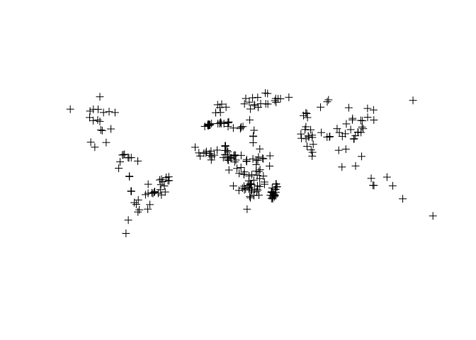
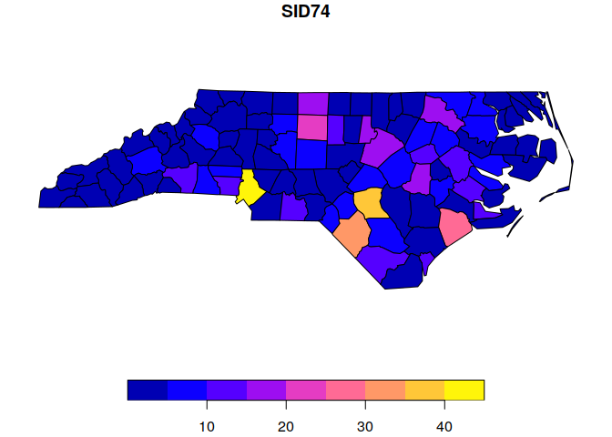

The R Script associated with this page is available here. Download this file and open it (or copy-paste into a new script) with RStudio if you want to follow along.
Before running any code here, make sure that you have installed all necessary packages beforehand.
As described in the lecture, spatial vector data come in a variety of formats and there are also multiple ways of loading them into R.
Sometimes spatial data is distributed in the form on text information only. A good example are for instance point localities. For start, lets get some spatial data in text format
# Lets get some data from
#Fritz, Steffen; See, Linda; Perger, Christoph; McCallum, Ian; Schill, Christian; Schepaschenko, Dmitry; Duerauer, Martina; Karner, Mathias; Dresel, Christopher; Laso-Bayas, Juan-Carlos; Lesiv, Myroslava; Moorthy, Inian; Salk, Carl F; Danylo, Olha; Sturn, Tobias; Albrecht, Franziska; You, Liangzhi; Kraxner, Florian; Obersteiner, Michael (2016): A global dataset of crowdsourced land cover and land use reference data (2011-2012). PANGAEA https://doi.pangaea.de/10.1594/PANGAEA.869660
dat <- read.table('https://doi.pangaea.de/10.1594/PANGAEA.869660?format=textfile',
skip = 17,sep = '\t',header = T)
class(dat)## [1] "data.frame"As you can see, this data is currently in tabular format. Let’s make it explicitly spatial. To do so we are going to work with the sp package for start.
The sp package is the old default way to create and manipulate spatial objects in R. Many R packages, particular those that haven’t been updated in a while, will likely still depend on this format. However it has largely been superseded by the sf package that combines spatial information with the tidy data concept. More about this latter though.
Convert and format our tabular data to a spatial object
library(sp)
# Set the coordinates for this object to the coordinate columns
# Here we first define the x-axis (longitude), followed by the y-axis (latitude)
coordinates(dat) <- ~ Longitude + Latitude
# By default this object won't have any projection assigned
# Since we know that the tabular data is in WGS-84 projection (Longitude-Latitude), we can set it
proj4string(dat) <- '+proj=longlat +ellps=WGS84 +datum=WGS84 +no_defs'Do you think you can visualize this new object and check that it is indeed spatial?
plot(dat)
class(dat)## [1] "SpatialPointsDataFrame"
## attr(,"package")
## [1] "sp"Well done.
You note that the object has now been converted to a SpatialPointsDataFrame, so a Spatial Points object, which is a requirement for many packages that interact with spatial data
Text format can be used not only to define point data (such as longitude-latitude), but also other geometric representations such as polygon data. According OGC standards these data can be for instance formatted as Well-known text (WKT), which is an important concept in spatial analyis that we will mention latter too.
For instance here is polygon that covers the Laxenburg schlosspark
lax <- 'POLYGON ((16.3594574385736 48.0702355060673,16.3609882350041 48.0694683197585,16.3648152260803 48.0688107223911,16.3684782032532 48.0682627181663,16.3736173055555 48.0696509842027,16.3794124634709 48.0710757446162,16.3814353016112 48.0709296171584,16.380724574697 48.0694683197585,16.3785923939546 48.0664725303671,16.3749840880827 48.0617958276381,16.3690249162641 48.0575206573412,16.3621910036281 48.0518198780156,16.3587467116595 48.0578129879854,16.3537716232604 48.0564609448419,16.3553024196909 48.0589822939637,16.3534435954539 48.0606631247802,16.3532249102496 48.0634400293739,16.3544823501746 48.0651207146451,16.3591840820682 48.0663263898385,16.3598948089823 48.0668013450392,16.3583640125519 48.067605105394,16.3590200681649 48.0688472557986,16.3594574385736 48.0702355060673))'To convert it to an sp object, we will rely on the GEOS library available through R with the rgeos package
library(rgeos)## rgeos version: 0.5-3, (SVN revision 634)
## GEOS runtime version: 3.8.0-CAPI-1.13.1
## Linking to sp version: 1.4-2
## Polygon checking: TRUElaxpol <- readWKT(lax)We won’t go much into detail in this and in my experience you will rarely do this directly in R. Here is for instance how we could define a Spatial Points object directly in R. If you are more interested in this, check out some of the resources.
# First lets create some random point data
coords <- data.frame( x = rnorm(100,3),
y = rnorm(100,3)
)
# To convert to a SpatialPoints object
x = SpatialPoints(coords)
# Finally lets assign some data to it, so that it becomes a Spatial*DataFrame object
d <- data.frame(ID = 1:100)
spdf <- SpatialPointsDataFrame(coords,d)This data still doesn’t have a projection. Remember how to assign it?
proj4string(spdf) <- '+proj=longlat +ellps=WGS84 +datum=WGS84 +no_defs'In most cases however the spatial data won’t come in text format, but in some other format that requires separate solutions for loading them in. Here we going to use the rgdal package which supports a number of spatial data and is the main background work hose also for raster data.
## rgdal: version: 1.5-12, (SVN revision 1018)
## Geospatial Data Abstraction Library extensions to R successfully loaded
## Loaded GDAL runtime: GDAL 3.0.4, released 2020/01/28
## Path to GDAL shared files: C:/Users/Martin/Documents/R/win-library/4.0/rgdal/gdal
## GDAL binary built with GEOS: TRUE
## Loaded PROJ runtime: Rel. 6.3.1, February 10th, 2020, [PJ_VERSION: 631]
## Path to PROJ shared files: C:/Users/Martin/Documents/R/win-library/4.0/rgdal/proj
## Linking to sp version:1.4-2
## To mute warnings of possible GDAL/OSR exportToProj4() degradation,
## use options("rgdal_show_exportToProj4_warnings"="none") before loading rgdal.| name | long_name | write | copy | isVector |
|---|---|---|---|---|
| AeronavFAA | Aeronav FAA | FALSE | FALSE | TRUE |
| AmigoCloud | AmigoCloud | TRUE | FALSE | TRUE |
| ARCGEN | Arc/Info Generate | FALSE | FALSE | TRUE |
| AVCBin | Arc/Info Binary Coverage | FALSE | FALSE | TRUE |
| AVCE00 | Arc/Info E00 (ASCII) Coverage | FALSE | FALSE | TRUE |
| BNA | Atlas BNA | TRUE | FALSE | TRUE |
| CAD | AutoCAD Driver | FALSE | FALSE | TRUE |
| Carto | Carto | TRUE | FALSE | TRUE |
| Cloudant | Cloudant / CouchDB | TRUE | FALSE | TRUE |
| CouchDB | CouchDB / GeoCouch | TRUE | FALSE | TRUE |
| CSV | Comma Separated Value (.csv) | TRUE | FALSE | TRUE |
| CSW | OGC CSW (Catalog Service for the Web) | FALSE | FALSE | TRUE |
| DGN | Microstation DGN | TRUE | FALSE | TRUE |
| DXF | AutoCAD DXF | TRUE | FALSE | TRUE |
| EDIGEO | French EDIGEO exchange format | FALSE | FALSE | TRUE |
| EEDA | Earth Engine Data API | FALSE | FALSE | TRUE |
| ElasticSearch | Elastic Search | TRUE | FALSE | TRUE |
| ESRI Shapefile | ESRI Shapefile | TRUE | FALSE | TRUE |
| ESRIJSON | ESRIJSON | FALSE | FALSE | TRUE |
| Geoconcept | Geoconcept | TRUE | FALSE | TRUE |
| GeoJSON | GeoJSON | TRUE | FALSE | TRUE |
| GeoJSONSeq | GeoJSON Sequence | TRUE | FALSE | TRUE |
| Geomedia | Geomedia .mdb | FALSE | FALSE | TRUE |
| GeoRSS | GeoRSS | TRUE | FALSE | TRUE |
| GFT | Google Fusion Tables | TRUE | FALSE | TRUE |
| GML | Geography Markup Language (GML) | TRUE | FALSE | TRUE |
| GPKG | GeoPackage | TRUE | TRUE | TRUE |
| GPSBabel | GPSBabel | TRUE | FALSE | TRUE |
| GPSTrackMaker | GPSTrackMaker | TRUE | FALSE | TRUE |
| GPX | GPX | TRUE | FALSE | TRUE |
| HTF | Hydrographic Transfer Vector | FALSE | FALSE | TRUE |
| HTTP | HTTP Fetching Wrapper | FALSE | FALSE | TRUE |
| Idrisi | Idrisi Vector (.vct) | FALSE | FALSE | TRUE |
| JML | OpenJUMP JML | TRUE | FALSE | TRUE |
| JP2OpenJPEG | JPEG-2000 driver based on OpenJPEG library | FALSE | TRUE | TRUE |
| JPEG2000 | JPEG-2000 part 1 (ISO/IEC 15444-1), based on Jasper library | FALSE | TRUE | TRUE |
| KML | Keyhole Markup Language (KML) | TRUE | FALSE | TRUE |
| MapInfo File | MapInfo File | TRUE | FALSE | TRUE |
| MBTiles | MBTiles | TRUE | TRUE | TRUE |
| Memory | Memory | TRUE | FALSE | TRUE |
| MSSQLSpatial | Microsoft SQL Server Spatial Database | TRUE | FALSE | TRUE |
| MVT | Mapbox Vector Tiles | TRUE | FALSE | TRUE |
| MySQL | MySQL | TRUE | FALSE | TRUE |
| netCDF | Network Common Data Format | TRUE | TRUE | TRUE |
| NGW | NextGIS Web | TRUE | TRUE | TRUE |
| ODBC | ODBC | TRUE | FALSE | TRUE |
| ODS | Open Document/ LibreOffice / OpenOffice Spreadsheet | TRUE | FALSE | TRUE |
| OGR_GMT | GMT ASCII Vectors (.gmt) | TRUE | FALSE | TRUE |
| OGR_PDS | Planetary Data Systems TABLE | FALSE | FALSE | TRUE |
| OGR_SDTS | SDTS | FALSE | FALSE | TRUE |
| OGR_VRT | VRT - Virtual Datasource | FALSE | FALSE | TRUE |
| OpenAir | OpenAir | FALSE | FALSE | TRUE |
| OpenFileGDB | ESRI FileGDB | FALSE | FALSE | TRUE |
| OSM | OpenStreetMap XML and PBF | FALSE | FALSE | TRUE |
| PCIDSK | PCIDSK Database File | TRUE | FALSE | TRUE |
| Geospatial PDF | TRUE | TRUE | TRUE | |
| PDS4 | NASA Planetary Data System 4 | TRUE | TRUE | TRUE |
| PGDUMP | PostgreSQL SQL dump | TRUE | FALSE | TRUE |
| PGeo | ESRI Personal GeoDatabase | FALSE | FALSE | TRUE |
| PLSCENES | Planet Labs Scenes API | FALSE | FALSE | TRUE |
| PostgreSQL | PostgreSQL/PostGIS | TRUE | FALSE | TRUE |
| REC | EPIInfo .REC | FALSE | FALSE | TRUE |
| S57 | IHO S-57 (ENC) | TRUE | FALSE | TRUE |
| SEGUKOOA | SEG-P1 / UKOOA P1/90 | FALSE | FALSE | TRUE |
| SEGY | SEG-Y | FALSE | FALSE | TRUE |
| Selafin | Selafin | TRUE | FALSE | TRUE |
| SQLite | SQLite / Spatialite | TRUE | FALSE | TRUE |
| SUA | Tim Newport-Peace’s Special Use Airspace Format | FALSE | FALSE | TRUE |
| SVG | Scalable Vector Graphics | FALSE | FALSE | TRUE |
| SXF | Storage and eXchange Format | FALSE | FALSE | TRUE |
| TIGER | U.S. Census TIGER/Line | TRUE | FALSE | TRUE |
| TopoJSON | TopoJSON | FALSE | FALSE | TRUE |
| UK .NTF | UK .NTF | FALSE | FALSE | TRUE |
| VDV | VDV-451/VDV-452/INTREST Data Format | TRUE | FALSE | TRUE |
| VFK | Czech Cadastral Exchange Data Format | FALSE | FALSE | TRUE |
| Walk | Walk | FALSE | FALSE | TRUE |
| WAsP | WAsP .map format | TRUE | FALSE | TRUE |
| WFS | OGC WFS (Web Feature Service) | FALSE | FALSE | TRUE |
| WFS3 | OGC WFS 3 client (Web Feature Service) | FALSE | FALSE | TRUE |
| XLS | MS Excel format | FALSE | FALSE | TRUE |
| XLSX | MS Office Open XML spreadsheet | TRUE | FALSE | TRUE |
| XPlane | X-Plane/Flightgear aeronautical data | FALSE | FALSE | TRUE |
For testing we are going to read in some of the example data that comes with the rgdal package
# Data from the rgdal package
dsn <- system.file("vectors", package = "rgdal")[1]
# Which layers are in the data source
ogrListLayers(dsn)## [1] "cities" "kiritimati_primary_roads"
## [3] "scot_BNG" "trin_inca_pl03"
## attr(,"driver")
## [1] "ESRI Shapefile"
## attr(,"nlayers")
## [1] 4The rgdal package always requires a folder name (data source) and a filename without extension.
Can you use the ogrInfo() command from the rgdal package to query the information in the ‘cities’ layer? The command requires a folder (dsn) and the name of the layer
ogrInfo(dsn=dsn, layer="cities")## Source: "C:\Users\Martin\Documents\R\win-library\4.0\rgdal\vectors", layer: "cities"
## Driver: ESRI Shapefile; number of rows: 606
## Feature type: wkbPoint with 2 dimensions
## Extent: (-165.27 -53.15) - (177.1302 78.2)
## CRS: +proj=longlat +datum=WGS84 +no_defs
## LDID: 0
## Number of fields: 4
## name type length typeName
## 1 NAME 4 40 String
## 2 COUNTRY 4 12 String
## 3 POPULATION 12 11 Integer64
## 4 CAPITAL 4 1 StringTo load the layer using rgdal
# To load the cities.shp file. Note that you point to the name of the layer and not the name of the file
cities <- readOGR(dsn=dsn, layer="cities")## OGR data source with driver: ESRI Shapefile
## Source: "C:\Users\Martin\Documents\R\win-library\4.0\rgdal\vectors", layer: "cities"
## with 606 features
## It has 4 fields
## Integer64 fields read as strings: POPULATIONThe rgdal package also comes with functionalities to write vector data
# Save the loaded cities file to your folder
output_folder = '.' # a dot is for the current folder
output_name = 'new_cities' # the output name
writeOGR(cities,dsn = output_folder, layer = output_name ,driver = "ESRI Shapefile")Can you load and write the previously created laxenburg park data used above (as WKT) and save it (any format you like)?
library(rgeos)
library(rgdal)
lax <- 'POLYGON ((16.3594574385736 48.0702355060673,16.3609882350041 48.0694683197585,16.3648152260803 48.0688107223911,16.3684782032532 48.0682627181663,16.3736173055555 48.0696509842027,16.3794124634709 48.0710757446162,16.3814353016112 48.0709296171584,16.380724574697 48.0694683197585,16.3785923939546 48.0664725303671,16.3749840880827 48.0617958276381,16.3690249162641 48.0575206573412,16.3621910036281 48.0518198780156,16.3587467116595 48.0578129879854,16.3537716232604 48.0564609448419,16.3553024196909 48.0589822939637,16.3534435954539 48.0606631247802,16.3532249102496 48.0634400293739,16.3544823501746 48.0651207146451,16.3591840820682 48.0663263898385,16.3598948089823 48.0668013450392,16.3583640125519 48.067605105394,16.3590200681649 48.0688472557986,16.3594574385736 48.0702355060673))'
laxpol <- readWKT(lax)
# Convert to data.frame
laxpol <- SpatialPolygonsDataFrame(laxpol, data = data.frame(ID = 1, name = 'Laxenburg park') )
proj4string(laxpol) <- '+proj=longlat +ellps=WGS84 +datum=WGS84 +no_defs'
# Write the output
writeOGR(laxpol,dsn = '.',layer = 'Laxenburg',driver = "ESRI Shapefile")
# or as GPKG, using the database as folder
writeOGR(laxpol,dsn = 'Laxenburg.gpkg',layer = 'Laxenburg',driver = "GPKG")Well done!
The R programming language has in recent years experience some form of revolution that data are treated and formatted as ‘tidy’ data.
Loading spatial data into R using sf is comparably easier
library(sf)## Linking to GEOS 3.8.0, GDAL 3.0.4, PROJ 6.3.1# Load the default country file coming with sf
nc <- st_read(system.file("gpkg/nc.gpkg", package="sf"))## Reading layer `nc.gpkg' from data source `C:\Users\Martin\Documents\R\win-library\4.0\sf\gpkg\nc.gpkg' using driver `GPKG'
## Simple feature collection with 100 features and 14 fields
## geometry type: MULTIPOLYGON
## dimension: XY
## bbox: xmin: -84.32385 ymin: 33.88199 xmax: -75.45698 ymax: 36.58965
## geographic CRS: NAD27class(nc)## [1] "sf" "data.frame"# Show the top 6 rows
head(nc, 6)Notice how this new object is both a ‘sf’ object as well as a ‘data.frame’. All the data assigned to this vector table can be used like you would use any other spatial information in a R data.frame, e.g. subsetting, filtering, plotting, etc… Furthermore the geometry is here not saved as part of the R-object but explicitly adressable in the column ‘geom’ using WKT.
Similarly, individual (or multiple) can be plotted by adressing them as you would adress an item in a list object So
plot(nc['SID74'])
Writing outputs in sf is equally straight forward.
# If you want to write this into a folder called myfolder
st_write(nc, paste0('myfolder', "/", "nc.shp") )
# You can also output the geometry data in WKT format
st_as_text(nc$geom)Sometimes a function or r-package creates outputs that are not in sf format. These need to be converted to sf before being able to use them in tidy format. The function for that in R is st_as_sf.
Can you take the Laxenburg park object and calculate its area ? The function to do so is ‘st_area()’ and requires a sf object.
# Convert the file
sf_laxpol <- st_as_sf(laxpol)
# The area in m2
st_area(sf_laxpol)
# Similarly one can write the laxenburg data to geopackage easily with sf
st_write(new_sf, 'Laxenburg.gpkg')Area calculations using the sf package use the ‘units’ package to assign a unit in R to vector of numeric values. You should get in result of ~2.2 Million ha
For the rest of the course we will primarily use the sf package for any spatial manipulation.